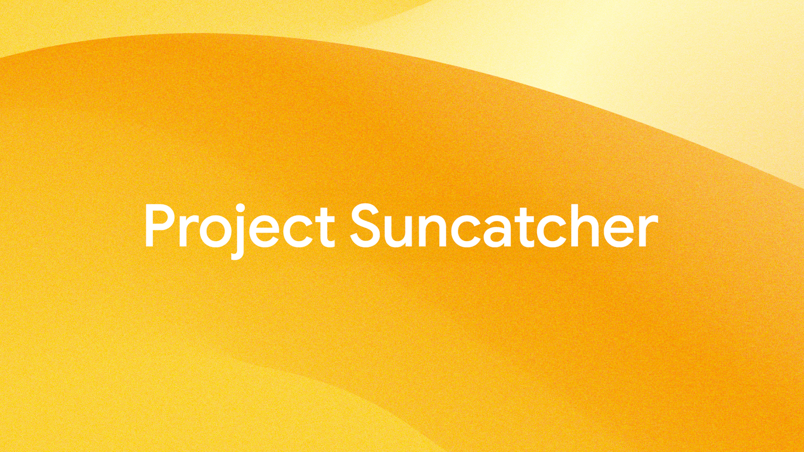
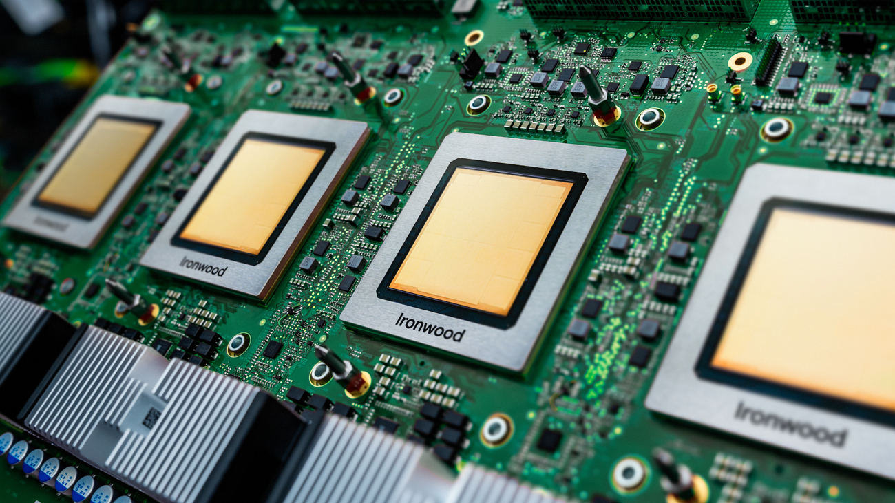

Alphabet (GOOGL)
W kontekście: Gracze i projekty
Alphabet wchodzi do tematu orbitalnych centrów danych nie jako operator satelitów, lecz przez badawczy program Project Suncatcher, ujawniony przez Google Research 4 listopada 2025 r. (🟠 Google Research Blog, 4 lis 2025). Pomysł polega na tym, by wynieść na orbitę to, w czym Google jest najsilniejszy na Ziemi - własne akceleratory AI. Suncatcher zakłada konstelację satelitów zasilanych energią słoneczną i wyposażonych w układy TPU (testowana generacja to Trillium v6e, sprawdzana pod kątem odporności na radiację kosmiczną), połączonych łącznością optyczną między satelitami, które wspólnie tworzyłyby orbitalny klaster obliczeniowy AI. Pierwsze prototypy mają trafić na orbitę na początku 2027 r. we współpracy z Planet Labs (🟠 Google Research Blog, 4 lis 2025).
Siła Alphabetu w tym wątku wynika z pionowej kontroli nad całym stosem AI. Google jest najstarszym i największym producentem własnych akceleratorów AI wśród hyperscalerów - pierwszy TPU wdrożył wewnętrznie w 2015 r., a siedem generacji później dysponuje układem Ironwood (TPU v7p) liczącym 9 216 chipów w superpodzie i osiągającym 42,5 exaflops FP8 (🟠 Google Research Blog, 4 lis 2025). Do tego dochodzi własny stos oprogramowania (JAX/XLA/Pathways), globalna sieć światłowodowa i ponad dekada doświadczenia w budowie centrów danych. To właśnie ten dorobek Suncatcher próbuje przenieść na orbitę - wątek rozwijany szerzej w Google - Project Suncatcher (TPU na orbicie, partner Planet Labs, demo ~2027).
W odróżnieniu od programów nastawionych na masową konstelację, Suncatcher pozostaje "moonshotem" R&D - bytem osobnym od ofensywy broadbandowej (porównaj Amazon Leo / Kuiper - osobny byt (broadband, nie compute)) i od pionowo zintegrowanego, agresywnie skalowanego podejścia SpaceX - od Starlink-as-compute przez wniosek o 1 mln satelitów po pionową integrację (TeraFab, xAI, S-1). Warto też odnotować, że już od 2021 r. Google Cloud hostuje w swoich centrach danych stacje naziemne Starlink (SpaceX), dostarczając warstwę cloud/edge dla klientów rozproszonych geograficznie (🟠 Google Research Blog, 4 lis 2025).
Materiały spółki
Grafiki z materiałów spółki / IR (prawa właściciela, użycie redakcyjne). Pełny rejestr:
Spolki/assets/_licencje.json.

1 | | Oficjalna grafika produktowa: układ Google Ironwood TPU v7p (7. generacja akceleratora AI). Źródło: storage.googleapis.com; licencja: materiały spółki / IR - prawa właściciela, użycie redakcyjne.

2 | | Koncepcja graficzna Project Suncatcher - satelity z TPU i łącznością optyczną między satelitami. Źródło: storage.googleapis.com; licencja: materiały spółki / IR - prawa właściciela, użycie redakcyjne.

3 | | Grafika promocyjna Ironwood / TPU v7 (social share). Źródło: storage.googleapis.com; licencja: materiały spółki / IR - prawa właściciela, użycie redakcyjne.
Pozycja rynkowa
Z perspektywy całej grupy ekspozycja na orbitalne centra danych jest absolutnie marginalna - to projekt badawczy bez przychodów. Alphabet wykazał 402,8 mld USD przychodu całkowitego za FY2025 (rok do 31 gru 2025), z czego około 75-76% pochodzi z reklam (Google Services), a Google Cloud odpowiada za 70,6 mld USD, czyli około 17,5% przychodów grupy (🔵 Alphabet Q4 i FY2025 Earnings Release, 4 lut 2026). Udział orbitalnego compute w sprzedaży wynosi efektywnie 0% / marginalny: Suncatcher to obecnie R&D z prototypami planowanymi dopiero na 2027 r., a nawet w ramach Cloud podział na AI infrastructure / edge / satellite jest NIE UJAWNIONY (🔵 Alphabet Q4 i FY2025 Earnings Release, 4 lut 2026).
Dla inwestora: orbitalne centra danych nie są dziś materialną linią przychodów Alphabetu - to opcja technologiczna finansowana z gotówki reklamowej, nie źródło sprzedaży.
W warstwie naziemnej Google Cloud to trzeci największy dostawca infrastruktury chmurowej (za AWS i Azure), z udziałem rynkowym szacowanym na około 10-13% globalnego rynku cloud infrastructure (🟠 analitycy rynkowi, Q2/Q4 2025). Skala budowy mocy obliczeniowej jest jednak ogromna - CapEx grupy na 2026 r. ma wynieść 175-185 mld USD (🔵 Alphabet Q4 i FY2025 Earnings Release, 4 lut 2026), co pokazuje, jakim zapleczem kapitałowym i sprzętowym dysponuje program taki jak Suncatcher.
Ryzyka
Pierwsze ryzyko jest finansowo-regulacyjne. Około 75-76% przychodów Alphabetu wciąż pochodzi z reklam, a postępowania antymonopolowe DoJ, UE i Chin mogą wymusić zmiany w Search, Androidzie lub Chrome (🔵 Alphabet Q4 i FY2025 Earnings Release, 4 lut 2026). Mechanizm jest prosty: to reklamowa gotówka finansuje moonshoty, więc każde ograniczenie rentowności reklamy bezpośrednio uszczupla zdolność do finansowania CapEx rzędu 175-185 mld USD, a wraz z nim badań nad orbitalnym compute.
Drugie ryzyko jest technologiczno-konkurencyjne i dotyczy samego Suncatchera. Satelity na orbicie SSO (~650 km) muszą przetrwać radiację, odprowadzić ciepło w próżni i unikać kosmicznych śmieci (ryzyko zespołu Kesslera), a prototypy pojawią się dopiero w 2027 r. (🟠 Google Research Blog, 4 lis 2025). Tymczasem konkurencja jest realna i bardziej zaawansowana operacyjnie: SpaceX złożył do FCC plany konstelacji nawet do 1 mln satelitów z funkcjami centrów danych i dysponuje własnymi, najtańszymi rakietami (🟠 Google Research Blog, 4 lis 2025), co rozwija wątek SpaceX - od Starlink-as-compute przez wniosek o 1 mln satelitów po pionową integrację (TeraFab, xAI, S-1). Po stronie państwowej rośnie też chińska konstelacja obliczeniowa (Three-Body Computing Constellation / ADA Space), opisana w Chiny - Three-Body Computing Constellation / Zhejiang Lab / ADA Space / Orbital Chenguang / CASC. Opóźnienia techniczne lub wyższy od założeń koszt wynoszenia mogą sprawić, że orbitalny AI compute Google'a nie osiągnie rentowności.
Dla inwestora: dla Alphabetu Suncatcher to niskie ryzyko bilansowe (znikomy CapEx względem całości), ale wysokie ryzyko wykonawcze samego programu - sukces jest niepewny i odległy w czasie.
Powiązane spółki
Inne notowane spółki z raportu dzielące z tą firmą co najmniej jeden wątek tematyczny (wspólny rynek, technologia lub łańcuch wartości).
- NVIDIA Corporation (NVDA) - Akceleratory GPU (COTS) - ładunek obliczeniowy on-orbit
Wspólne wątki: Gracze i projekty. - Planet Labs PBC (PL) - Partner Google Suncatcher (platformy/obrazowanie)
Wspólne wątki: Gracze i projekty. - Rocket Lab Corporation (RKLB) - Launch (Electron/Neutron) + Space Systems: bus, ogniwa SolAero, komponenty
Wspólne wątki: Gracze i projekty. - Voyager Technologies, Inc. (VOYG) - Stacje kosmiczne (Starlab), systemy kosmiczne i obronne
Wspólne wątki: Gracze i projekty.
Linkują tutaj
6 powiązanych notatek
- Mapa raportu Orbitalne / kosmiczne centra danych
- Sekcja Gracze i projekty
- Spółka NVIDIA (NVDA)
- Spółka Planet Labs (PL)
- Spółka Rocket Lab (RKLB)
- Spółka Voyager Technologies (VOYG)